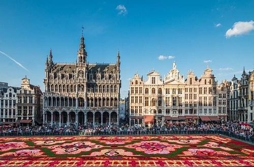

Главная достопримечательность Бельгии – ее многоликая архитектура. Аскетичные романские мотивы, элегантная и одновременно чопорная готика, изобилующий затейливым декором брабантский стиль, изящное барокко и, наконец, его высочество модерн – 99% бельгийских зданий соответствуют как минимум одному из перечисленных направлений. Чтобы вернуться в далекое прошлое, обязательно загляните в Брюгге, который со своими уютными домиками и крошечными мостиками давным-давно стал единым музеем под открытым небом.
